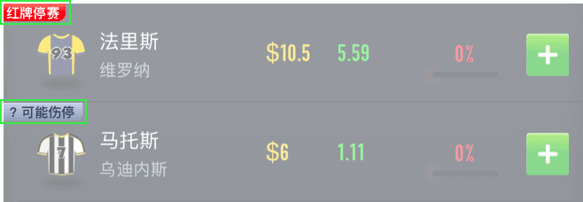
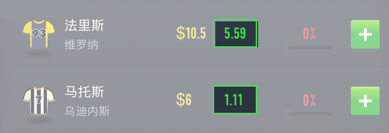
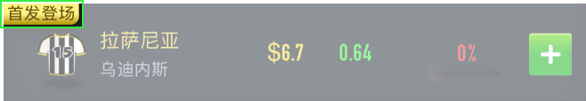
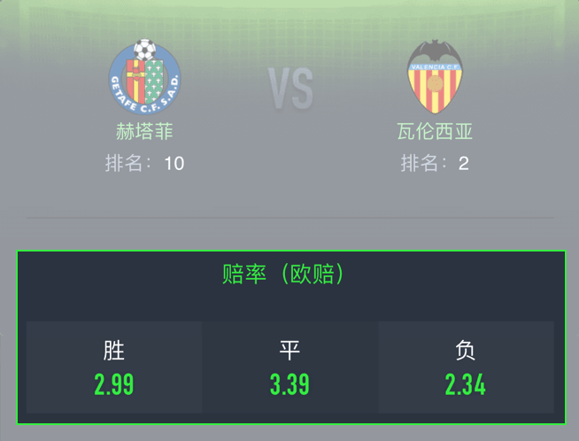
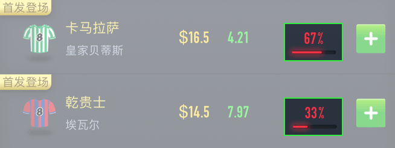
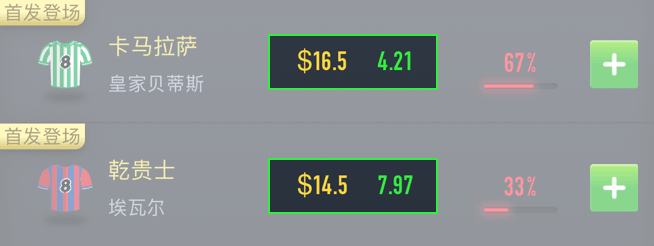
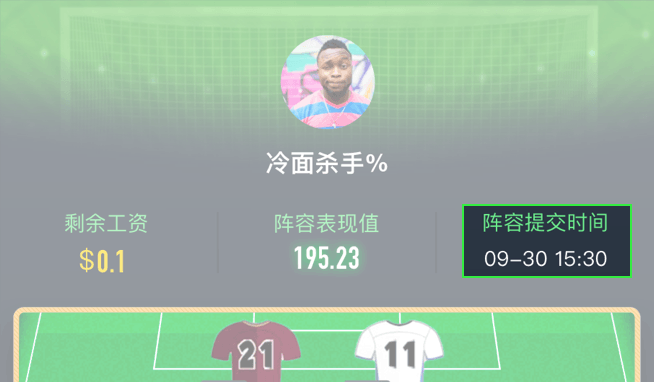

<ion-view view-title="我的" hide-tabs class="wodexy">
<ion-content class="">
	<div class="rule_box" ng-if="whichRule=='what'">	
		<h1 class="rule_title">
			什么是星钻和星币
		</h1>
		<div class="rule_con">
			<div class="ruleItems">	
				<h2 class="title green"><i></i>星钻：</h2>
				<p class="content">参与球星对战并<span class="a-text-color-orange">预测支持</span>表现更好的球员，及参加经典11人竞猜房间<span class="a-text-color-orange">入场费</span>使用。<br />星钻可以通过在线充值，或通过星币兑换获得。
					<span class="a-font-size-small-x a-text-color-whit" style="white-space: nowrap;">
						1 =10
					</span>
				</p>
			    <h2 class="title green"><i></i>星币：</h2>
			    <p class="content">参与游戏并获得奖励获得。单次竞技投入的星钻越多，获得的星币也就越多。<br />星币可以前往商城<span class="a-text-color-orange">兑换现金券</span>等商品，也可以<span class="a-text-color-orange">兑换成星钻</span>继续参加球星对战或经典11人等更多竞猜游戏。</p>
			</div>
		</div>
	</div>	
	<div class="rule_box" ng-if="whichRule=='rule'">	
		<h1 class="rule_title">
			竞技规则
		</h1>
		<div class="rule_con">
			<div class="ruleItems">	
				<h2 class="head a-text-color-light">球星对战</h2>
				<p class="content">StarKings每日都会选出即将参加比赛的两名同位置的球星，根据他们在即将开始的真实比赛的表现数据，计算各自的<span class="a-text-color-orange">表现值</span>。表现值高的一方获胜。<br />玩家可以凭借自己的专业知识，<span class="a-text-color-orange">预判并支持两名球星谁的表现值更高，获得奖励</span></p>
			    <h2 class="title green"><i></i>玩法规则：</h2>
			    <p class="content">1. 为了保证公正性，我们会在真实比赛结束后对数据进行核实。并在<span class="a-text-color-orange">早上{{prizeStart}}</span>对当天凌晨及前一天晚上的比赛竞猜进行开奖。<br />2. 若球员在比赛中没有上场，则该竞猜将以失效处理，退还用户所有投入的星钻。<br />3.若两位球星在该场比赛的表现值相同，则判定<span class="a-text-color-orange">右边的球员</span>（代表客场）获胜</p>
			    <h2 class="title green"><i></i>奖金分配：</h2>
			    <p class="content">预判正确的玩家可以按自己支持的比例，获得的预判错误玩家投注相应的星币。也就是说自支持的钻石越多，或者对方球星的投注钻石越多，玩家可赢得的奖励就越多。<br />星币可以兑换成丰富奖品，如<span class="a-text-color-orange">现金券</span>，也可以兑换成<span class="a-text-color-orange">星钻</span>参与更多的游戏。</p>
			    <h2 class="head a-text-color-light">经典11人</h2>
			    <p class="content">玩家根据前锋、中场、后卫、门将四个不同位置，<span class="a-text-color-orange">在限定资金内，预测挑选你认为表现最好的11名任意球队球员，组成一只球队。</span>根据所选球员在真实比赛中的实际表现（数据统计）计算表现值，球队的表现值决定你在房间内的排行次序，获得相应奖励。</p>
			    <h2 class="title green"><i></i>玩法规则：</h2>
			    <p class="content">1. 比赛开赛前，玩家可以随时更换自己挑选的球员。当有其中一场真实比赛开赛，房间即关闭且不可再更换球员。<br />2. 为了保证公正性，我们会在真实比赛结束后对数据进行核实。并在<span class="a-text-color-orange">早上{{prizeStart}}</span>对当天凌晨及前一天晚上的比赛竞猜进行开奖。<br />3.真实比赛过程中，玩家可以查看自己的试试排名情况和球员的表现值变化<br />4.若出现玩家球员评分之和相同相同的情况时，则<span class="a-text-color-orange">最后一次修改阵容时间早的玩家排名在前。</span></p>
			    <h2 class="title green"><i></i> 奖金分配：</h2>
				<p class="content" style="margin-bottom: 1em;"><span class="a-text-color-orange">房间内的奖池根据房间人数和入场费决定，入场费越高，人数越多，奖励越大！</span></p>
				<p class="content" style="margin-bottom: 1em;"><span class="a-text-color-orange">当前奖励</span>：在当前房间人数情况下，相应名次所获得的奖励。</p>
				<p class="content" style="margin-bottom: 1em;"><span class="a-text-color-orange">最高奖励</span>：房间满人数下，相应名次所获得的奖励。</p>
				<p class="content" style="margin-bottom: 1em;">奖金分配方案包括：</p>
				<p class="content">1. 第一名有奖：排名第一名的玩家获得所有奖池奖励</p>
				<p class="content">2. 前三名有奖：排名前三名的玩家瓜分所有奖池，其中第一名获得奖池50%奖励。房间需满3人开奖</p>
				<p class="content">3. 前25%梯度有奖：排名前25%的玩家依名次递减瓜分所有奖池星币。房间需满4人开奖</p>
				<p class="content">4. 前50%均分有奖：排名前50%的玩家均分所有奖池星币</p>
			</div>
		</div>
	</div>
	<div class="rule_box" ng-if="whichRule=='player'">	
		<h1 class="rule_title">
			表现值计算
		</h1>
		<div class="rule_con">
			<ion-scroll style="max-height: 92vh;">
				<div class="ruleItems">	
					<div rule-exp style="margin-top: 0.2rem;"></div>				
				</div>
			</ion-scroll>
		</div>
	</div>	
	<div class="rule_box" ng-if="whichRule=='problem'">	
		<h1 class="rule_title">
			常见问题
		</h1>

		<div class="rule_con">
			<div class="ruleItems">	
			    <h2 class="title green"><i></i>Q1：我参与的球星对战如果没有人支持另一方怎么办？</h2>
			    <p class="content">若比赛开始后，球星对战竞猜若有一方球星没有人支持，我们会将您支持的星钻原数返还给你。</p>
			    <h2 class="title green"><i></i>Q2：球星对战双方出现平分，怎么办？</h2>
			    <p class="content">若两位球员比赛后表现值一样，即没有分出胜负，则判定右边的球员（代表客场）获胜。</p>
			    <h2 class="title green"><i></i>Q3：比赛出现延期，怎么办？</h2>
			    <p class="content">比赛出现延期，若48小时内比赛恢复继续比赛，则竞猜继续进行。若48小时内未继续比赛，则使用该比赛的房间和球星对战会以失效处理，您花费的所有星钻会原数返还给您。</p>
			    <h2 class="title green"><i></i>Q4：比赛出现中断，怎么办？</h2>
			    <p class="content">比赛出现中断，若48小时内比赛恢复继续比赛，则竞猜继续进行。若48小时内未继续比赛，则比赛球员数据以中断时间为止作为有效数据，进行开奖。</p>
			    <h2 class="title green"><i></i>Q5：比赛真实数据从何而来？</h2>
			    <p class="content">球员及比赛数据均来自英超等官方认可的第三方数据提供商。</p>
			    <h2 class="title green"><i></i>Q6：没有找到想选的球员？</h2>
			    <p class="content">球员及比赛数据均来自英超等官方认可的第三方数据提供商，与现实比赛同步。如您发现有什么问题，请及时联系我们！</p>			    
			    <h2 class="title green"><i></i>Q7：我创建的房间在比赛开始后没人加入怎么办？</h2>
			    <p class="content">若很不幸您创建的房间在比赛开始后没人加入，我们会将房间按失效处理，并返回您创建房间所花费的星钻。</p>			    
			    <h2 class="title green"><i></i>Q8：房间里不只一个人为何也会失效？</h2>
			    <p class="content">这可能是因为房间的人数不满足房间开奖需要的最少人数。前三名和前25%梯度有奖需要至少房间有3人和4人才会开奖，否则房间会按失效处理，返回您的星钻。</p>			    
			    <h2 class="title green"><i></i>Q9：我参与了竞猜后什么时候开奖？</h2>
			    <p class="content">为了保证公正性，我们会在真实比赛结束后对数据进行核实。并在早上<span class="a-text-color-orange">早上{{prizeStart}}</span>对当天凌晨及前一天晚上的比赛竞猜进行开奖。</p>			    
			    <h2 class="title green"><i></i>Q10：怎么知道我赢了？</h2>
			    <p class="content">在“我的竞猜”→“已结束”中查看，可以得知您参与竞猜的排名和获奖情况。我们也会在开奖时用微信通知第一时间通知您。</p>
			    <h2 class="title green"><i></i>Q11：分数相同为什么我排在后面？</h2>
			    <p class="content">同样的分数，先提交阵容者排名在前。</p>
			    <h2 class="title green"><i></i>Q12：获得了星币怎么用？</h2>
			    <p class="content">星币可以前往兑换商城兑换成现金券，也可以兑换成星钻继续参与竞猜游戏。</p>
			    <h2 class="title green"><i></i>Q13：我兑换了现金券后，多长时间会到账？</h2>
			    <p class="content">通常情况工作日内款项会在24小时内到账，但碰到节假日，银行会顺延处理，请您耐心等待。</p>
			    <h2 class="title green"><i></i>Q14：我兑换了现金券后，为什么24小时后也没到账？</h2>
			    <p class="content">银行有时处理时间会拖延到3-5个工作日。如您遇到此情况，请与我们联系，我们会帮助您催促银行尽快处理。</p>	
			    <h2 class="title green"><i></i>Q15：为什么兑换记录显示成功，但款项还未到账？</h2>
			    <p class="content">我们的兑换记录是与银行同步，但最终结果请以款项到账为准。如您遇到此情况，请与我们联系，我们会帮助您解决。</p>
			    <h2 class="title green"><i></i>Q16：进入游戏时，昵称显示不正常，或出现乱码，怎么办？</h2>
			    <p class="content">这个可能是由于昵称包含特殊字符而引致的。若有什么问题，请及时联系我们。或可尝试把昵称稍作修改后，再进入游戏。比如昵称由 🎉007🎉 改为007。</p>
			    <h2 class="title green"><i></i>Q17：进入游戏时，出现卡顿或空白的情况，怎么办？</h2>
			    <p class="content">玩家可尝试退出游戏或返回上一页，然后再重新进入。</p>
			    <h2 class="title green"><i></i>Q18：进入游戏时，出现界面适配问题，怎么办？</h2>
			    <p class="content">建议玩家升级手机操作系统。苹果手机升级至iOS 10.3.2以上，安卓手机升级至Android 4.4以上。</p>
			</div>
		</div>
	</div>
	<div class="rule_box" ng-if="whichRule=='whatWord'">	
		<h1 class="rule_title">
			名词解释
		</h1>
		<div class="rule_con">
			<div class="ruleItems">	
				<h2 class="title green"><i></i>剩余资金是什么?</h2>
			    <p class="content">玩家在选择球员时，可以使用的资金池。为了体现竞技公平和避免玩家出现许多相同阵容选择，故作剩余资金限定</p>
			    <h2 class="title green"><i></i>剩余人均是什么?</h2>
			    <p class="content">剩余人均 = 剩余资金 / 可选球员数。比方: 剩余资金是$140，可选11名球员，剩余人均 = $140 / 11 = $12.7</p>
			    <h2 class="title green"><i></i>球员身价是什么?</h2>
			    <p class="content">球员的身价是体育行业资深人士按照一套算法模型计算得出，涉及球员实际身价、位置、出场时间等多个数据指标，是球员实力的客观体现。身价也会随着球员在真实比赛中表现好坏上下波动</p>
			    <h2 class="title green"><i></i>近期战力是什么?</h2>
			    <p class="content">这是根据球员近期场上的表现情况进行评分(未上场也计算在内)，分值越高，说明球员近期表现越好，下一场获得最高值的可能性越大</p>
			    <h2 class="title green"><i></i> 阵容战斗力是什么?</h2>
				<p class="content">指已选阵容中，所有球员近期战力的总和</p>
			</div>
		</div>
	</div>
	<div class="rule_box" ng-if="whichRule=='chooseSkill'">	
		<h1 class="rule_title">选人攻略</h1>
		<div class="rule_con">
			<div class="ruleItems">
				<p class="content">阵容的总表现值是依照每位球员在现实比赛中的实际表现数据算出，因此，玩家在安排阵容时可按以下几个原则甄选队员(先后顺序与具体位置无关，无需关注球员具体位置)：</p>
			    <h2 class="title green"><i></i>1. 切记不要选停赛的球员</h2>
			    <p class="content">球员的名字旁边会提示该球员是否在本轮联赛处于停赛期或者因伤可能无法出赛。在现实比赛中无法出场的球员是肯定得不到分数的</p>
			    <p class="content"></p>
			    <h2 class="title green"><i></i>2. 参照近期战力</h2>
			    <p class="content">战力是球员近五场表现值的平均值，分值越高，说明球员近期表现越好，下一场获得高分值的可能性越大。</p>
			    <p class="content"></p>
			    <h2 class="title green"><i></i>3. 参照现实比赛的首发阵容</h2>
			    <p class="content">我们会在比赛开始前给出率先开始比赛的首发名单选了不上场的球员，那就亏大了</p>
			    <p class="content"></p>
			    <h2 class="title green"><i></i>4. 考虑比赛赔率</h2>
			    <p class="content">赔率可以告诉我们哪只球队获胜的几率更大。而获胜的球队，球员往往会有更好的表现，得到更高的表现值</p>
			    <p class="content"></p>
			    <h2 class="title green"><i></i>5. 参照选择率</h2>
			    <p class="content">选择率高的球员说明他是多数玩家的选择。有时候英雄所见略同，但真理也可能掌握在少数人手中。参考选择率虽然安全，但出奇往往才能制胜</p>
			    <p class="content"></p>
			    <h2 class="title green"><i></i>6. 尽量选性价比高的球员</h2>
			    <p class="content">每位玩家手里的工资额度是有限的，谁也不可能每个位置都选明星球员，因此如果有球员近期战力远高于其身价，说明该球员可为球队贡献超出自身身价的价值</p>			    
			    <p class="content"></p>
			    <h2 class="title green"><i></i>7. 尽早提交阵容</h2>
			    <p class="content">如果出现两位或多位玩家阵容表现值相同的情况，先提交阵容的玩家排名在前</p>	
			    <p class="content"></p>
			</div>
		</div>
	</div>
	
</ion-content>
</ion-view>
